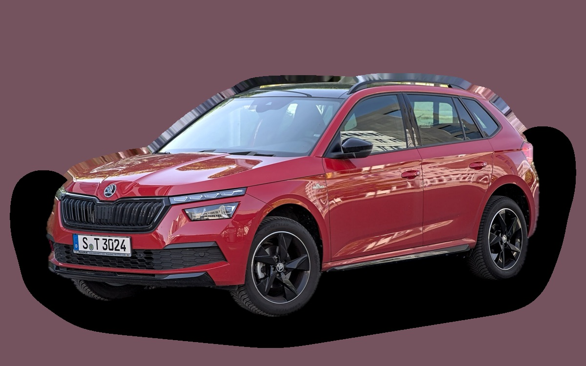
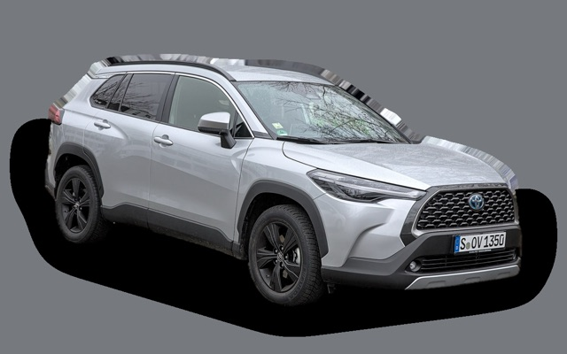
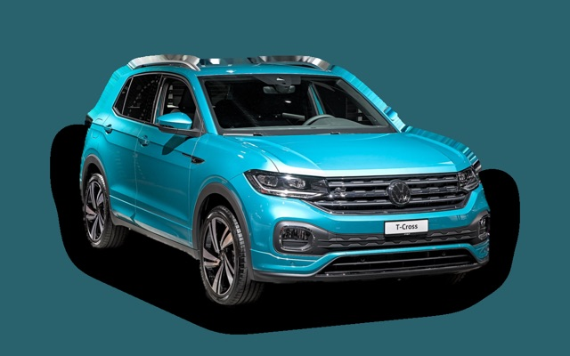
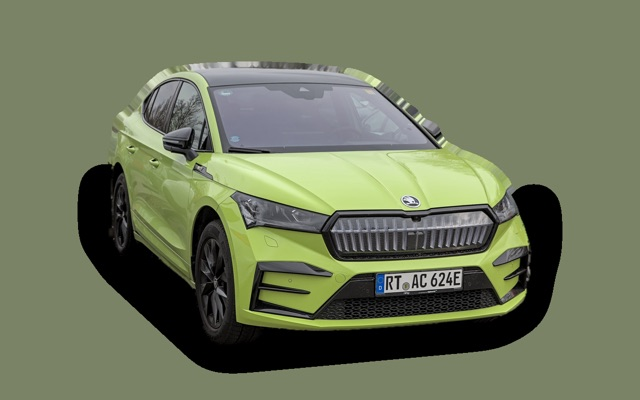

What does a Skoda Kamiq cost per month?
A 2023 Skoda Kamiq costs about SEK 3,195 a month, all in.

_Monte_Carlo_1X7A0412.jpg){kind=link}
Monthly cost by model year
| Model year | Version in the calculation | Price | Per month | Grade |
|---|---|---|---|---|
| 2026 | 1.0 TSI 115 manuell, Selection | SEK 309,800 | SEK 4,389 | D |
| 2023 | 1.0 TSI 115 manuell, Essence | SEK 217,000 | SEK 3,195 | C |
| 2020 | 1.0 TSI 115 manuell, Essence | SEK 178,000 | SEK 3,019 | C |
Based on 5 years of ownership and 12,500 km a year, with fuel prices from 2026-10-22. The monthly cost includes depreciation, fuel, servicing and repairs, insurance and road tax.
How the cost splits for a 2023 car
- Depreciation: SEK 963/mo
- Fuel: SEK 1,207/mo
- Servicing and repairs: SEK 486/mo
- Insurance: SEK 476/mo
- Road tax: SEK 65/mo
Lease or buy new?
Škoda Privatleasing offers the Kamiq Selection Explore 1.0 TSI 116 from SEK 2,815 a month for 36 months and 10,000 km a year. Here is what that costs compared with buying the same car new for SEK 309,800 and selling it after 36 months, at 12,500 km a year and 5 percent interest.
Leasing is cheaper SEK 814 less a month, SEK 29,304 over 36 months.
| Per month | Lease | Buy |
|---|---|---|
| Lease payment, 12,500 km a year | SEK 2,962 | – |
| Set-up and invoice fees | SEK 73 | – |
| Depreciation | – | SEK 2,441 |
| Interest on the money, 5% | – | SEK 1,108 |
| Servicing and repairs | included | SEK 301 |
| Fuel | SEK 1,207 | SEK 1,207 |
| Insurance | SEK 549 | SEK 549 |
| Road tax | SEK 530 | SEK 530 |
| Total per month | SEK 5,321 | SEK 6,135 |
| Total over 36 months | SEK 191,556 | SEK 220,860 |
You drive 2,500 km more per year than the offer assumes. The brand's price for the extra distance: SEK 148 a month. Škoda Privatleasing: Kamiq Selection Explore 1.0 TSI 116, 36 months, 10,000 km a year, servicing included, variable payment that follows interest rates. Set-up fee SEK 495 and invoice fee SEK 59 a month. Source: privatleasing.skoda.se, read on 26 October 2026.
Buying: SEK 309,800 for a new car in the same version, and SEK 221,937 back when you sell it after 3 years. The residual value is based on ad prices for 3-year-old cars, adjusted because you drive 37,500 km in 3 years instead of the typical 41,000 km. The interest is what the money costs: interest on a car loan, or the interest you miss on savings. Fuel, insurance and tax are the same either way. Excess mileage and abnormal wear are charged when you hand back a leased car, and trading in a car you own at a dealer usually gets you less than the ad price.
Calculate with your own distance and interest · All lease cars compared
Used prices in ads
| Model year | Median price | Ads | Typical mileage |
|---|---|---|---|
| 2026 | SEK 264,900 | 18 | 7,000 km |
| 2025 | SEK 239,900 | 53 | 27,000 km |
| 2024 | SEK 249,000 | 13 | 26,000 km |
| 2023 | SEK 234,900 | 70 | 41,000 km |
| 2022 | SEK 214,900 | 6 | 55,000 km |
| 2021 | SEK 212,400 | 12 | 65,000 km |
| 2020 | SEK 184,900 | 10 | 85,000 km |
The median price in Swedish ads by model year in October 2026 (source: Blocket). Ad prices are asking prices, and the final price may be lower.
Engines and versions
| Engine | Fuel | Power | 0–100 km/h | Consumption (WLTP) | Range | Model years | Extra cost |
|---|---|---|---|---|---|---|---|
| 1.0 TSI 115 manuell | Petrol | 115 hp | 10.1 s | 5.6 l/100 km | – | 2020– | – |
| 1.5 TSI 150 DSG | Petrol | 150 hp | 8.4 s | 5.9 l/100 km | – | 2020– | +SEK 16,500 |
- Trim: Essence, Selection (+SEK 5,500), Monte Carlo (+SEK 31,400)
Facts
- Body
- SUV
- Model years
- 2020–
- New from
- SEK 309,800
- Boot
- 400 litres
- Euro NCAP
- 5 of 5 stars
- New-car warranty
- 3 years
- Reliability
- 4 of 5
- Comprehensive insurance, estimate
- SEK 6,800/yr
- Servicing, estimate
- SEK 3,500/yr
Common faults to watch for
- DSG gearbox DQ200 (mechatronics, clutch), repair about SEK 20,000
- Leaking plastic water pump and thermostat housing, repair about SEK 6,500
- EGR and particulate filter (TDI), repair about SEK 9,000
- Haldex pump (AWD), repair about SEK 7,000
The faults apply to some engines and model years. The calculator works out the risk for the exact version you choose.
Pros and cons
Pro
Roomy for its size and good value.
Con
Weak base engine when fully loaded.
Similar cars

Toyota Corolla CrossSEK 3,141/mo as a 2023 model Renault CapturSEK 3,129/mo as a 2023 model
Renault CapturSEK 3,129/mo as a 2023 model Peugeot 2008SEK 3,276/mo as a 2023 model
Peugeot 2008SEK 3,276/mo as a 2023 model
Volkswagen T-CrossSEK 3,318/mo as a 2023 model
Skoda EnyaqSEK 3,046/mo as a 2023 model Suzuki VitaraSEK 3,347/mo as a 2023 model
Suzuki VitaraSEK 3,347/mo as a 2023 model
Updated 2026-10-27 · ad data Oct 2026